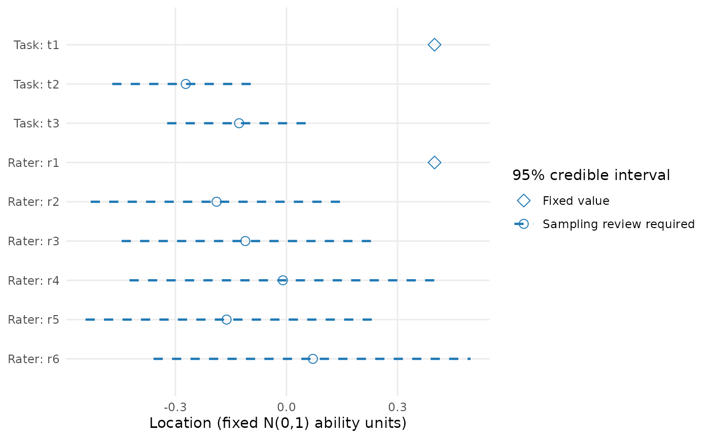

Plot saved posterior estimates and credible intervals
Source:R/api-plotting-posterior.R
plot.mfrm_posterior_summary.RdPlot saved posterior estimates and credible intervals
Usage
# S3 method for class 'mfrm_posterior_summary'
plot(
x,
quantity = c("location", "ability", "step_offset", "slope", "log_slope",
"population_mean", "population_sd"),
facet = NULL,
draw = TRUE,
reference = NULL,
preset = "standard",
show_legend = TRUE,
title = NULL,
subtitle = NULL,
caption = NULL,
...
)Arguments
- x
Output from
read_mfrm_posterior().- quantity
One of
"location"(default),"ability","step_offset","slope","log_slope","population_mean"or"population_sd". Population quantities require an estimated-population export. Quantities with different units are not mixed.- facet
Optional facet/owner names to retain;
NULLretains all for the selected quantity. Step rows usefacet = "Step owner"and retain their owner labels and category transitions in the plotted table.- draw
Logical;
FALSEreturns plot data without opening a device.- reference
Optional finite vertical reference;
NULLomits it. Zero for locations and one for relative slopes are references, not standards of performance or rater quality.- preset
A package plot preset, such as
"standard"or"monochrome".- show_legend
Logical; show interval/fixed-value symbols.
- title, subtitle, caption
Optional returned text. Defaults omit it. Text is not drawn by default; retrieve it with
plot_data().- ...
Unused.
Value
Invisibly, an mfrm_plot_data with the exact long table, source
settings, parameter identities, interval statuses and interpretation notes.
as_ggplot() returns an editable ggplot; plot_data() supplies the table
for custom graphics. No posterior draws, densities or raincloud samples
are reconstructed from marginal summaries.
Details
These are saved equal-tailed 95% posterior credible intervals, not frequentist confidence intervals. Dashed intervals and open circles mark estimates whose sampling screen requires review; solid intervals mean that no sampling flag was detected, not that inference is validated. Open diamonds mark fixed anchors/constraint-determined values without an interval. Crosses mark estimated points without an available interval. Missing points retain their labels and are never replaced by zero. Original row order, labels and endpoints are preserved. The plot never refits, changes the level, selects significant effects or validates priors.
Session plot defaults
Set options(mfrmr.plot_preset = "publication") to choose a session default
for plotting functions that expose the common preset argument. The
supported values are "standard", "publication", "compact" and
"monochrome". Precedence is an explicit call argument, then the session
option, then "standard". For example, preset = "standard" overrides
a session set to "monochrome". Explicit preset = NULL retains the
earlier package-default behavior; it does not read the session option.
Invalid session values cause an error only when that option is needed.
The category-curve, data-quality, fit-review, connectivity and network
routes of plot() for report bundles use the same option through ....
Plots without a common preset argument, including extended-model plots
with their own palette controls, keep their own settings. This option
selects a preset, not a universal theme or a guarantee that all renderers
implement every appearance control identically.
New plot payloads retain the resolved preset for supported saved-data
rendering. Converting an existing payload with as_ggplot() uses its saved
appearance, even after the session option changes. A call that creates a
new plot from a fit or statistical result uses the current default.
For a reproducible script, supply preset explicitly or set the option in
that script. Saving only the fitted model does not save a session option.
No global ggplot theme is changed.
Restore previous settings with old <- options(mfrmr.plot_preset = "monochrome") followed by options(old). Use
options(mfrmr.plot_preset = NULL) to remove the option. The preset changes
appearance, not estimates, confidence levels or diagnostic thresholds.
Examples
posterior <- read_mfrm_posterior(system.file(
"extdata", "posterior-example", package = "mfrmr"))
p <- plot(posterior, quantity = "location", draw = FALSE)
plot_data(p, "table")
#> variable quantity facet level transition value_role mean
#> 34 locations[1] location Task t1 <NA> fixed_anchor 0.400000000
#> 35 locations[2] location Task t2 <NA> estimated -0.272092290
#> 36 locations[3] location Task t3 <NA> estimated -0.127907710
#> 37 locations[4] location Rater r1 <NA> fixed_anchor 0.400000000
#> 38 locations[5] location Rater r2 <NA> estimated -0.188825025
#> 39 locations[6] location Rater r3 <NA> estimated -0.111174975
#> 40 locations[7] location Rater r4 <NA> estimated -0.009676254
#> 41 locations[8] location Rater r5 <NA> estimated -0.161726463
#> 42 locations[9] location Rater r6 <NA> estimated 0.071402718
#> median sd lower upper
#> 34 0.40000000 NA NA NA
#> 35 -0.27153571 0.09911457 -0.4706603 -0.07768350
#> 36 -0.12846429 0.09911457 -0.3223165 0.07066032
#> 37 0.40000000 NA NA NA
#> 38 -0.19312417 0.17618477 -0.5288888 0.14526793
#> 39 -0.10687584 0.17618477 -0.4452679 0.22888878
#> 40 -0.02152561 0.22169470 -0.4239602 0.40227731
#> 41 -0.16384775 0.19778027 -0.5427963 0.23845038
#> 42 0.07207030 0.21861362 -0.3590169 0.49738638
#> interval_status sampling_review fixed_value
#> 34 fixed_value_no_interval sampling_review_required 0.4
#> 35 computed_sampling_review_required sampling_review_required NA
#> 36 computed_sampling_review_required sampling_review_required NA
#> 37 fixed_value_no_interval sampling_review_required 0.4
#> 38 computed_sampling_review_required sampling_review_required NA
#> 39 computed_sampling_review_required sampling_review_required NA
#> 40 computed_sampling_review_required sampling_review_required NA
#> 41 computed_sampling_review_required sampling_review_required NA
#> 42 computed_sampling_review_required sampling_review_required NA
#> reference
#> 34 Saved facet centering constraints; zero is not a performance standard.
#> 35 Saved facet centering constraints; zero is not a performance standard.
#> 36 Saved facet centering constraints; zero is not a performance standard.
#> 37 Saved facet centering constraints; zero is not a performance standard.
#> 38 Saved facet centering constraints; zero is not a performance standard.
#> 39 Saved facet centering constraints; zero is not a performance standard.
#> 40 Saved facet centering constraints; zero is not a performance standard.
#> 41 Saved facet centering constraints; zero is not a performance standard.
#> 42 Saved facet centering constraints; zero is not a performance standard.
#> direction rhat ess_bulk ess_tail
#> 34 Higher values favor lower coded scores. NA NA NA
#> 35 Higher values favor lower coded scores. 1.002031 1539.6019 400.6955
#> 36 Higher values favor lower coded scores. 1.002031 1539.6019 400.6955
#> 37 Higher values favor lower coded scores. NA NA NA
#> 38 Higher values favor lower coded scores. 1.002963 861.4291 522.4420
#> 39 Higher values favor lower coded scores. 1.002963 861.4291 522.4420
#> 40 Higher values favor lower coded scores. 1.004839 1077.7120 579.7112
#> 41 Higher values favor lower coded scores. 1.003883 928.3332 388.5267
#> 42 Higher values favor lower coded scores. 1.002321 1102.4267 571.8319
#> mcse_lower mcse_upper role interval_computed
#> 34 NA NA reported_parameter FALSE
#> 35 0.018775975 0.006029796 reported_parameter TRUE
#> 36 0.005798675 0.018034816 reported_parameter TRUE
#> 37 NA NA reported_parameter FALSE
#> 38 0.013228350 0.031741620 reported_parameter TRUE
#> 39 0.033730575 0.011834855 reported_parameter TRUE
#> 40 0.029088910 0.019302735 reported_parameter TRUE
#> 41 0.014366700 0.027675005 reported_parameter TRUE
#> 42 0.022163675 0.016108135 reported_parameter TRUE
#> endpoint_mcse_fraction Display Label Y
#> 34 NA Fixed value Task: t1 9
#> 35 0.04777884 Sampling review required Task: t2 8
#> 36 0.04589282 Sampling review required Task: t3 7
#> 37 NA Fixed value Rater: r1 6
#> 38 0.04708344 Sampling review required Rater: r2 5
#> 39 0.05003373 Sampling review required Rater: r3 4
#> 40 0.03520647 Sampling review required Rater: r4 3
#> 41 0.03542416 Sampling review required Rater: r5 2
#> 42 0.02587995 Sampling review required Rater: r6 1
if (requireNamespace("ggplot2", quietly = TRUE)) as_ggplot(p)
